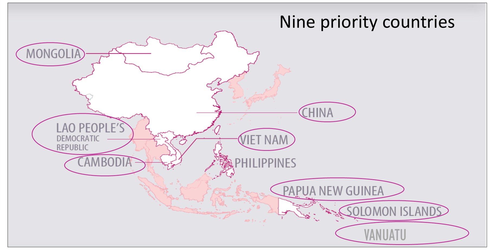
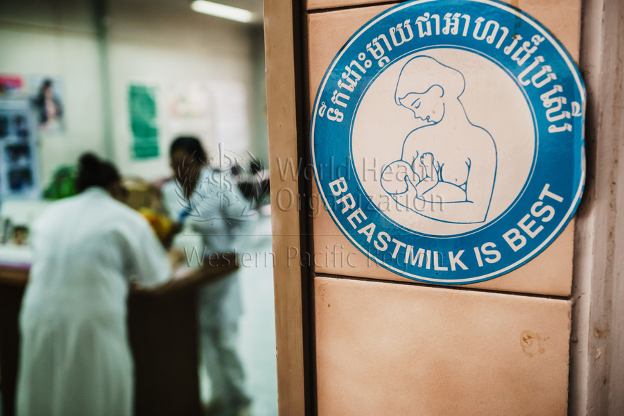
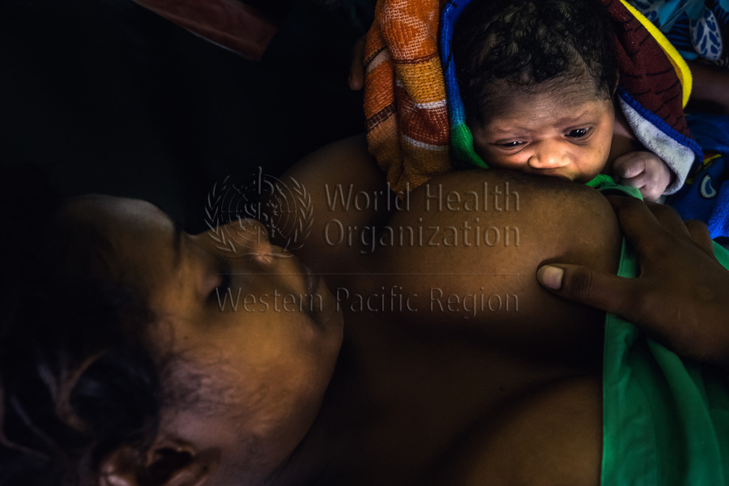
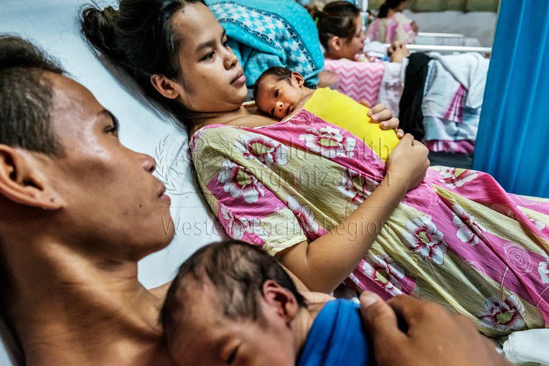
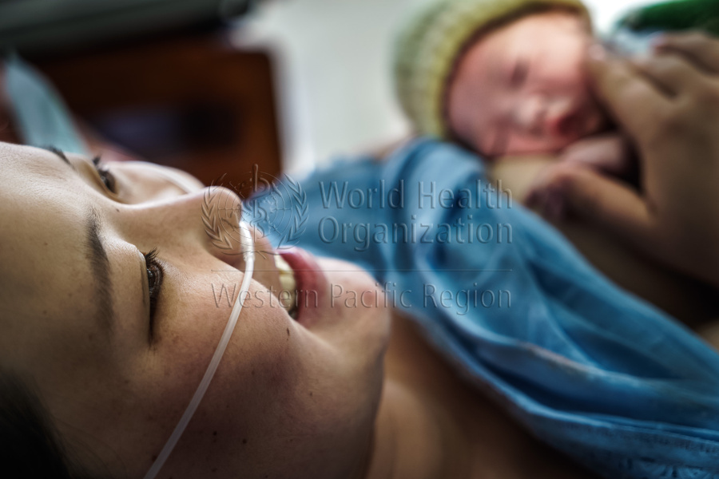
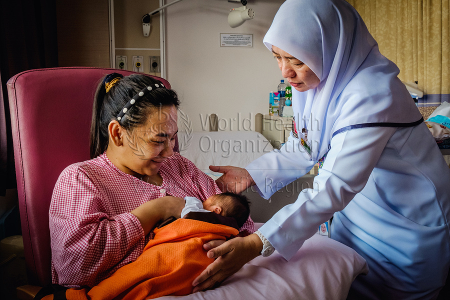
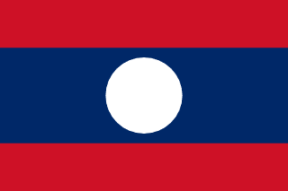
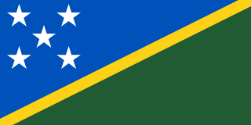
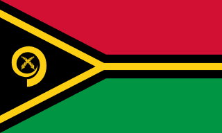

An interactive companion to the WHO Regional Office for the Western Pacific Early Essential Newborn Care report — 15 figures, 9 countries, six years of measurement, and the full picture of how mother-newborn care has evolved across health systems serving 1.9 billion people.

Nine priority countriesTracked against the Action Plan for Healthy Newborn Infants in the Western Pacific (2014–2020, extended to 2030) — three layers of results: outputs (system reach), outcomes (care practices), and impact (mortality).
Each dashboard distils a section of the 2023 regional report into interactive figures, country comparisons and downloadable tables. Built for ministry-of-health analysts, regional advisors and academic users.








Seven priority countries provided full facility-level data; two additional countries (Philippines, Vanuatu) contributed time-series for selected indicators.
The 2023 regional EENC review is the third measurement round (after 2017 and 2019) coordinated by the WHO Regional Office for the Western Pacific. Data are collected through a standardised facility assessment combining record review, mother interviews, observed deliveries, and infrastructure inspection.
All values shown reflect the published 2023 regional report. Where indicator definitions evolved between rounds (notably the SSC composite indicator), trends use harmonised definitions.